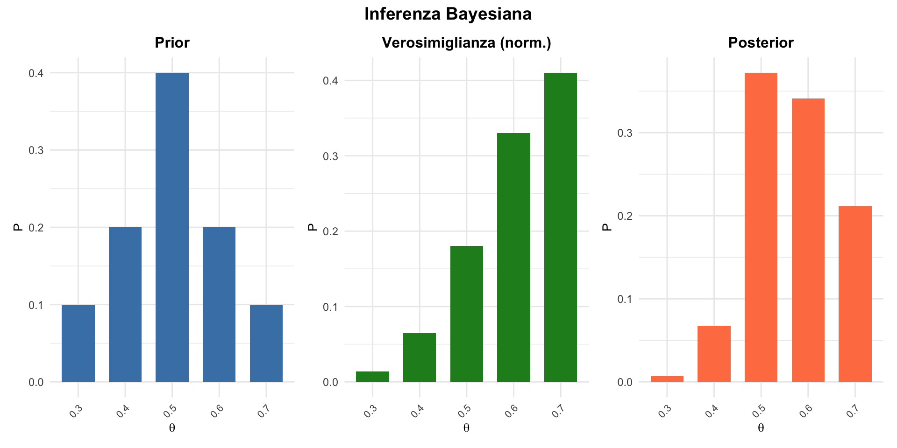

![]()
[1] 1Prior, verosimiglianza e posterior
L’architettura dell’inferenza bayesiana — Segmento 1
13 febbraio 2026
Un cambio di paradigma
Ricordate il problema?
Nelle ultime tre lezioni abbiamo costruito un quadro coerente dell’inferenza frequentista — e ne abbiamo visto i limiti strutturali.
Lezione 14 — Il problema concettuale Il frequentismo calcola \(P(\text{dati} \mid H_0)\), non \(P(H \mid \text{dati})\). L’intervallo di confidenza non è una probabilità sul parametro.
Lezione 15 — Il problema interpretativo Il valore-\(p\) non è la probabilità che \(H_0\) sia vera. Con bassa potenza, gli effetti “significativi” tendono a essere esagerati (errore di Tipo M) e talvolta persino nel segno sbagliato (errore di Tipo S).
Lezione 16 — Il problema sistemico P-hacking, HARKing, publication bias: un sistema di incentivi che ha amplificato le debolezze strutturali del frequentismo.
Oggi cambia tutto
Oggi iniziamo a studiare un approccio che risponde direttamente alle domande che il frequentismo lasciava senza risposta.
Ricordate la domanda dello psicologo clinico? “Qual è la probabilità che questo trattamento funzioni?” Il frequentismo rispondeva: “Se il trattamento non funzionasse, questi dati sarebbero sorprendenti.”
L’inferenza bayesiana risponde: “Data l’evidenza, la probabilità che il trattamento funzioni è del 93%.”
Questa è la differenza. E per arrivarci, servono solo tre ingredienti e una formula.
Obiettivi del segmento
- Capire i tre ingredienti dell’inferenza bayesiana.
- Imparare la formula di Bayes per i parametri.
- Calcolare il posterior a mano in casi semplici.
- Capire perché questo approccio è utile per lo psicologo.
Parte 1: i tre ingredienti
Il problema dello psicologo
Abbiamo visto che la verosimiglianza ci dice quanto i dati sono compatibili con diversi valori del parametro. La conoscete già dalla lezione sulla verosimiglianza — è lo stesso concetto.
Ma spesso abbiamo anche informazioni pregresse:
- dalla letteratura scientifica,
- dall’esperienza clinica,
- da studi precedenti.
Come combinare queste fonti di informazione?
Un esempio concreto
Uno psicologo clinico sta valutando un nuovo training per l’ansia sociale.
Cosa sa già (prima dello studio):
- la letteratura indica che training simili hanno un tasso di successo tra 40% e 70%;
- la sua esperienza clinica suggerisce che il 50% è un valore tipico.
Cosa osserva (dati):
- Su 10 pazienti, 7 migliorano.
La domanda bayesiana
“Date le mie conoscenze pregresse e i dati osservati, cosa posso concludere sulla probabilità di successo \(\theta\)?”
L’inferenza bayesiana combina entrambe le fonti di informazione. Notate il contrasto con il frequentismo: il test \(t\) userebbe solo i dati, ignorando ciò che lo psicologo sa dalla letteratura e dall’esperienza clinica. L’approccio bayesiano formalizza invece questo processo di integrazione di informazioni.
Ingrediente 1: la distribuzione a priori (prior)
Il prior rappresenta ciò che crediamo sul parametro prima di vedere i dati.
\[ P(\theta) = \text{Prior}. \]
Nel nostro esempio:
“Credo che \(\theta\) sia probabilmente intorno a 0.50, ma potrebbe essere tra 0.30 e 0.70.”
Ingrediente 2: la verosimiglianza (likelihood)
La verosimiglianza esprime quanto sono verosimili i diversi valori del parametro, avendo osservato i dati del campione:
\[ \mathcal{L}(\theta \mid \text{dati}) = \text{Verosimiglianza}. \]
Nel nostro esempio:
“Avendo osservato 7 successi su 10 prove, qual è la verosimiglianza relativa dei diversi valori di \(\theta\)?”
Ingrediente 3: la distribuzione a posteriori (posterior)
Il posterior è ciò che crediamo sul parametro dopo aver visto i dati.
\[ P(\theta \mid \text{dati}) = \text{Posterior}. \]
Nel nostro esempio:
“Dopo aver osservato 7/10 successi, cosa credo ora su \(\theta\)?”
Notate: il posterior è esattamente \(P(\theta \mid \text{dati})\) — la probabilità del parametro dati i dati. È la quantità che il frequentismo non poteva calcolare e che il ricercatore desiderava conscere fin dall’inizio.
La formula di Bayes
Il teorema di Bayes ci dice come combinare questi ingredienti:
\[ \underbrace{P(\theta \mid \text{dati})}_{\text{Posterior}} = \frac{\underbrace{\mathcal{L}(\theta \mid \text{dati})}_{\text{Verosimiglianza}} \times \underbrace{P(\theta)}_{\text{Prior}}}{\underbrace{P(\text{dati})}_{\text{Costante}}}. \]
Versione semplificata
Poiché \(P(\text{dati})\) è una costante (non dipende da \(\theta\)), possiamo scrivere:
\[ \text{Posterior} \propto \text{Verosimiglianza} \times \text{Prior}. \]
Il simbolo \(\propto\) significa “proporzionale a”.
In parole semplici
\[ \boxed{\text{Cosa credo ora} = \text{Cosa dicono i dati} \times \text{Cosa credevo prima}} \]
L’inferenza bayesiana è un aggiornamento razionale delle credenze (sul parametro \(\theta\)) alla luce delle nuove evidenze.
Questa formula è sorprendentemente semplice. Eppure è tutto ciò che serve per risolvere i problemi che il frequentismo lasciava aperti. Vediamo come funziona concretamente.
Parte 2: un esempio con i calcoli a mano
Semplifichiamo il problema
Per capire il meccanismo, usiamo un esempio con pochi valori possibili.
Supponiamo che \(\theta\) possa assumere solo 5 valori:
\[ \theta \in \{0.3, 0.4, 0.5, 0.6, 0.7\}. \]
Passo 1: definire il prior
Lo psicologo, basandosi sulla letteratura, assegna queste probabilità a priori:
| \(\theta\) | 0.3 | 0.4 | 0.5 | 0.6 | 0.7 |
|---|---|---|---|---|---|
| Prior \(P(\theta)\) | 0.10 | 0.20 | 0.40 | 0.20 | 0.10 |
Il prior è centrato su 0.5 (il valore più credibile a priori).
Verifica: il prior è una distribuzione di probabilità legittima?
Sì, somma a 1. La distribuzione è ben definita.
Passo 2: calcolare la verosimiglianza
Abbiamo osservato 7 successi su 10.
Per ogni valore di \(\theta\), calcoliamo \(\mathcal{L}(\theta \mid \text{dati})\):
\[ \mathcal{L}(\theta \mid y = 7; n = 10) = \binom{10}{7} \theta^7 (1-\theta)^3. \]
Questa è la distribuzione binomiale che conoscete già. Il coefficiente binomiale \(\binom{10}{7} = 120\) è uguale per tutti i valori di \(\theta\), quindi non influenza le proporzioni relative.
Calcoli a mano
| \(\theta\) | \(\theta^7\) | \((1-\theta)^3\) | \(\binom{10}{7} \times \theta^7 \times (1-\theta)^3\) |
|---|---|---|---|
| 0.3 | 0.00022 | 0.343 | \(120 \times 0.00022 \times 0.343 = 0.009\) |
| 0.4 | 0.0016 | 0.216 | \(120 \times 0.0016 \times 0.216 = 0.042\) |
| 0.5 | 0.0078 | 0.125 | \(120 \times 0.0078 \times 0.125 = 0.117\) |
| 0.6 | 0.028 | 0.064 | \(120 \times 0.028 \times 0.064 = 0.215\) |
| 0.7 | 0.082 | 0.027 | \(120 \times 0.082 \times 0.027 = 0.267\) |
Verifichiamo con R
[1] 0.009 0.042 0.117 0.215 0.267I valori corrispondono.
Passo 3: calcolare il numeratore
\[ \text{Numeratore} = \text{Verosimiglianza} \times \text{Prior}. \]
| \(\theta\) | Verosimiglianza | Prior | Prodotto |
|---|---|---|---|
| 0.3 | 0.009 | 0.10 | 0.0009 |
| 0.4 | 0.042 | 0.20 | 0.0084 |
| 0.5 | 0.117 | 0.40 | 0.0468 |
| 0.6 | 0.215 | 0.20 | 0.0430 |
| 0.7 | 0.267 | 0.10 | 0.0267 |
Verifichiamo con R
Passo 4: normalizzare per ottenere il posterior
Il posterior deve sommare a 1. Dividiamo ogni valore per la somma totale:
Verifica finale
Il posterior somma a 1. La distribuzione è ben definita.
La tabella completa
| \(\theta\) | Prior | Verosimiglianza | Prodotto | Posterior |
|---|---|---|---|---|
| 0.3 | 0.10 | 0.009 | 0.0009 | 0.007 |
| 0.4 | 0.20 | 0.042 | 0.0084 | 0.067 |
| 0.5 | 0.40 | 0.117 | 0.0468 | 0.372 |
| 0.6 | 0.20 | 0.215 | 0.0430 | 0.342 |
| 0.7 | 0.10 | 0.267 | 0.0267 | 0.212 |
Cosa è successo?

Interpretazione
- Prior: credevo che \(\theta = 0.5\) fosse il valore più plausibile (40%).
- Verosimiglianza: i dati (7/10) suggeriscono \(\theta = 0.7\).
- Posterior: compromesso — ora credo che \(\theta = 0.5\) o \(\theta = 0.6\) siano i valori più plausibili.
I dati hanno spostato le mie credenze verso valori più alti, ma il prior ha impedito che la stima “saltasse” direttamente a 0.7. Il posterior rappresenta un compromesso ragionevole tra ciò che sapevo prima e ciò che i dati mi dicono.
Parte 3: significato per la psicologia
Perché l’approccio bayesiano è utile?
- Incorpora la conoscenza pregressa: non partiamo mai da zero.
- Quantifica l’incertezza: otteniamo una distribuzione, non un singolo numero.
- Si aggiorna: con nuovi dati, ricalcoliamo il posterior.
- Risponde alla domanda giusta: “Qual è la probabilità che \(\theta\) sia in un certo intervallo?”
Cosa potete fare ora che prima non potevate
Ricordate l’intervallo di confidenza? Non potevate dire “c’è il 95% di probabilità che il parametro sia in questo intervallo.” Ora, con il posterior, potete.
Cosa potete fare ora che prima non potevate
Ricordate il valore-\(p\)? Non potevate dire “la probabilità che il trattamento funzioni è X%.” Ora, con il posterior, potete calcolare \(P(\theta > 0 \mid \text{dati})\) direttamente.
Cosa potete fare ora che prima non potevate
Ricordate il problema dell’“assenza di evidenza”? Il frequentismo non poteva distinguere tra “non c’è effetto” e “non ho abbastanza dati.” L’approccio bayesiano produce una distribuzione che mostra chiaramente se i dati sono inconclusivi.
Un esempio clinico: screening
Uno psicologo deve decidere se un test di screening è abbastanza sensibile.
Prior (dalla letteratura): test simili hanno sensibilità tra 0.70 e 0.90.
Dati: su 20 pazienti con la condizione, 16 risultano positivi.
Domanda: “Qual è la probabilità che la sensibilità sia almeno 0.75?”.
Dopo l’aggiornamento bayesiano
È possibile calcolare direttamente
\[ P(\theta \geq 0.75 \mid \text{dati}). \]
Si tratta di una probabilità diretta sul parametro, proprio il tipo di informazione più utile per supportare decisioni cliniche.
Provate a formulare questa stessa domanda nel framework frequentista:
non è possibile.
Il frequentismo può solo dirvi
“se la sensibilità fosse esattamente 0.75, quanto sarebbero sorprendenti questi dati?”
— una domanda molto meno utile.
Confronto con l’approccio frequentista
| Domanda | Frequentista | Bayesiano |
|---|---|---|
| “Qual è la probabilità che \(\theta > 0.75\)?” | Non può rispondere | Risponde direttamente |
| “I dati sono incompatibili con \(\theta = 0.75\)?” | Risponde (valore-\(p\)) | Non è la domanda principale |
| “Quanto è grande l’effetto?” | IC (interpretazione indiretta) | Posterior (interpretazione diretta) |
| “I dati sono inconclusivi?” | Non può distinguere | Il posterior mostra l’incertezza |
Esercizio 1
Un ricercatore sta studiando l’efficacia di un intervento breve per il panico.
Prior:
basandosi su studi pilota, crede che la probabilità di successo sia:
| \(\theta\) | 0.4 | 0.5 | 0.6 |
|---|---|---|---|
| Prior | 0.25 | 0.50 | 0.25 |
Dati: 4 successi su 6 pazienti.
Compito: calcola il posterior.
Soluzione Esercizio 1 — Passo 1
Calcoliamo la verosimiglianza (4 successi su 6):
Soluzione Esercizio 1 — Passo 2
Calcoliamo il prodotto:
Soluzione Esercizio 1 — Passo 3
Normalizziamo:
Soluzione Esercizio 1 — Interpretazione
| \(\theta\) | Prior | Posterior |
|---|---|---|
| 0.4 | 0.25 | 0.15 |
| 0.5 | 0.50 | 0.44 |
| 0.6 | 0.25 | 0.41 |
I dati (4/6 = 67%) hanno spostato le credenze verso valori più alti di \(\theta.\)
Notate che possiamo calcolare immediatamente la probabilità che \(\theta \geq 0.5\):
\[0.44 + 0.41 = 0.85,\]
ovvero l’85%.
Questa è una risposta diretta a una domanda clinicamente rilevante.
Esercizio 2
Una psicologa valuta l’aderenza a un programma di mindfulness.
Prior: uniforme su \(\theta \in \{0.5, 0.6, 0.7, 0.8\}\) (tutti ugualmente probabili).
Dati: 6 pazienti su 8 completano il programma.
Compiti:
- calcola il posterior;
- qual è la probabilità a posteriori che \(\theta \geq 0.7\)?
Soluzione Esercizio 2 — Parte 1
Soluzione Esercizio 2 — Parte 2
Probabilità che \(\theta \geq 0.7\):
[1] 0.6495276C’è circa il 67% di probabilità che l’aderenza sia almeno 70%.
Riepilogo
Prior: le nostre credenze prima di osservare i dati.
Verosimiglianza: la plausibilità dei valori del parametro alla luce dei dati.
Posterior: le nostre credenze aggiornate.
Formula: \(\text{Posterior} \propto \text{Verosimiglianza} \times \text{Prior}\).
L’inferenza bayesiana risponde a domande direttamente rilevanti per la pratica psicologica — le stesse domande che il frequentismo non poteva formulare.
Per il prossimo segmento
Vedremo:
- Come passare da valori discreti a distribuzioni continue.
- L’approssimazione a griglia per casi più realistici.
- Come visualizzare l’aggiornamento bayesiano.
- L’effetto della quantità di dati e della scelta del prior.